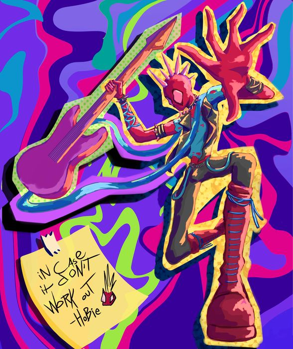

@CuervoArcoiris
Hola, soy CuervoArcoiris
Arte digital que nace de diferentes situaciones, pensamientos y experiencias.

Presentación
CuervoArcoiris es una artista digital Mexicana que da vida a sus pensamientos a traves de ilustraciones digitales. El estilo se caracteriza por colores vivos y escenarios magicos.
En este sitio hay cinco obras representativas de la artista. Cada ilustracion tiene su propia sección, donde se explica de qué trata cada una y qué técnica se usó para hacerla. Al final puedes contar cuál fue tu favorita.
Ilustraciones
¿Cuál fue tu imagen favorita?
Completa el formulario y dinos cuál ilustración te gustó más.